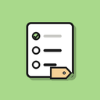

PlainList privacy policy
This policy covers the PlainList Android app (“PlainList”), a grocery and shopping list with prices. In short: your lists are stored on your phone. They leave it only when you export or share a list, or when you turn on the optional household sharing, and then they are encrypted on your phone first. PlainList has no account, no ads, no analytics and no tracking, and we never sell or share your data.
Information the app handles
- Your lists and their items: names, quantities, prices, notes, categories, and whether an item is checked off.
- The history of items you added (name, last category and price, how often), and which ones you marked as staples.
- Settings: currency, language, suggestions and check-off style.
All of this is stored on your phone, in the app's private storage.
Household sharing (optional, off by default)
If you turn on household sharing, PlainList makes a household code on your phone. So that the other phones in your household can see the same lists, your lists and categories (the first item above; your history and settings stay on the phone) are sent over HTTPS to our sync server, PlainAPI, which runs on the developer's own computer. Before anything is sent, each list is encrypted on your phone with AES-256-GCM using a key made from your household code. The code itself is never sent: the server only sees a name derived from it by a one-way hash, the time of each upload and the size of the encrypted data. We cannot read your lists.
Anyone who has your household code can read and change the shared lists, so share it only with people you trust. If you stop sharing on a phone, that phone keeps its lists and stops sending. To have the encrypted data deleted from the server, contact us (below) and we will delete it. Sharing never blocks the app: when the server can't be reached, everything keeps working on your phone and changes are sent later.
14-day server log
Our sync server (PlainAPI) runs on the developer's own computer. For every request the app sends to it, the server keeps a log entry with the full request and the full answer for 14 days. For PlainList that is the encrypted lists your phone sends and receives, in the same encrypted form, so the log cannot be read either. Each entry also records the time, the app and its version or the AI model used, and the country and network part of your address (never the full IP address). It never keeps your household code (the app never sends it), API keys or passwords.
Your encrypted lists stay on our server for sharing as described above; the 14-day log is an extra copy that is deleted on its own after 14 days.
The log is kept only to find and fix problems and to improve the quality of results. After 14 days each entry is deleted automatically, and the log is not included in backups. Only the developer can see it, in a private dashboard behind the developer's Google sign-in. It is never sold, shared, used for advertising or used to train AI models. To have your requests deleted sooner, email tmosby137@gmail.com.
Exports and sharing a list
Your list also leaves your phone when you choose to export it as a CSV file or share it as text. It goes only to the app or place you pick in the system share sheet or save dialog. Importing reads only the text you paste or the file you pick.
Home screen widget
If you add the widget, the name of your current list and the items still to buy are kept in the app's own storage on the phone so the widget can show them. Nothing is sent anywhere.
Permissions
PlainList asks only for internet access, which is used solely for the optional household sharing. Files are saved and opened through the system's own dialogs.
Storage and deletion
You can delete any item, list or history entry in the app. Uninstalling the app removes its data from the phone. Phones in the same household keep their own copy. Copies in the 14-day server log are deleted automatically after 14 days.
What we don't do
- We don't sell or transfer user data to third parties.
- We don't show ads or use advertising IDs.
- We don't use analytics or crash-reporting services.
Children
The app is not directed at children under 13 and does not knowingly collect information from anyone.
Changes
If this policy changes, the updated version will be posted on this page with a new date.
Contact
Questions or deletion requests: email tmosby137@gmail.com, or open an issue on GitHub (issues are public, so please use email for anything personal).